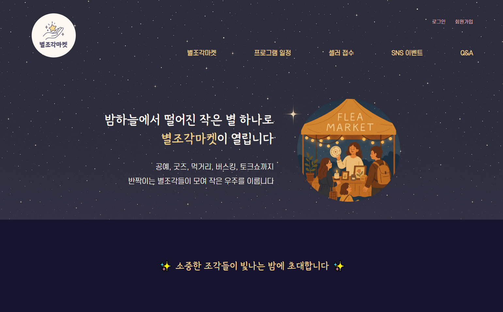
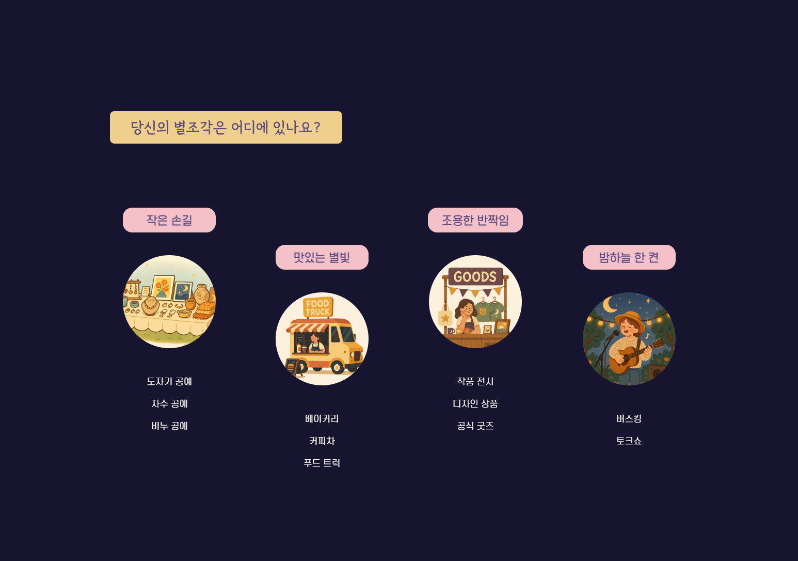
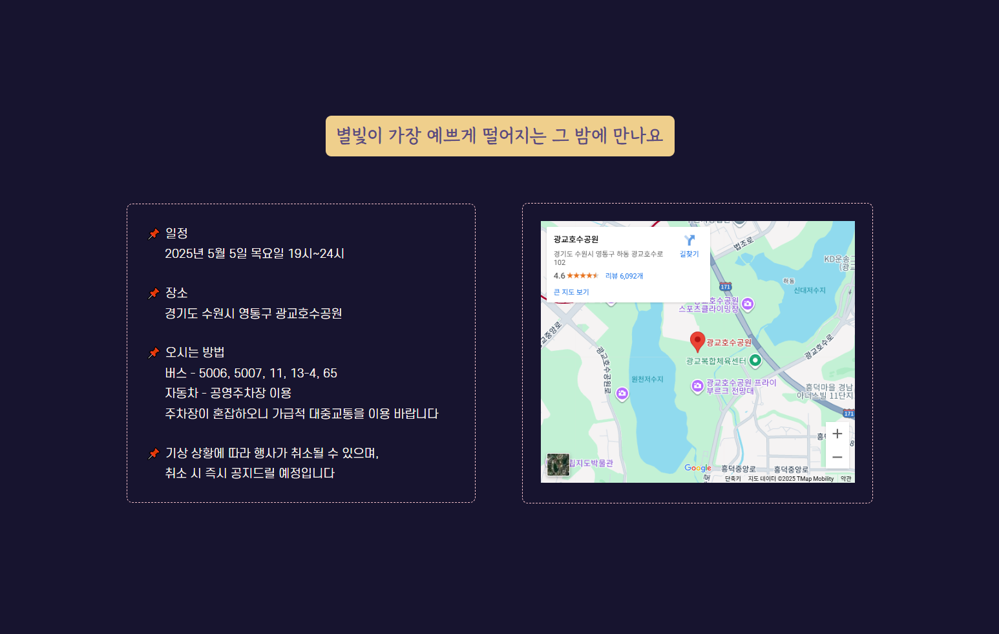
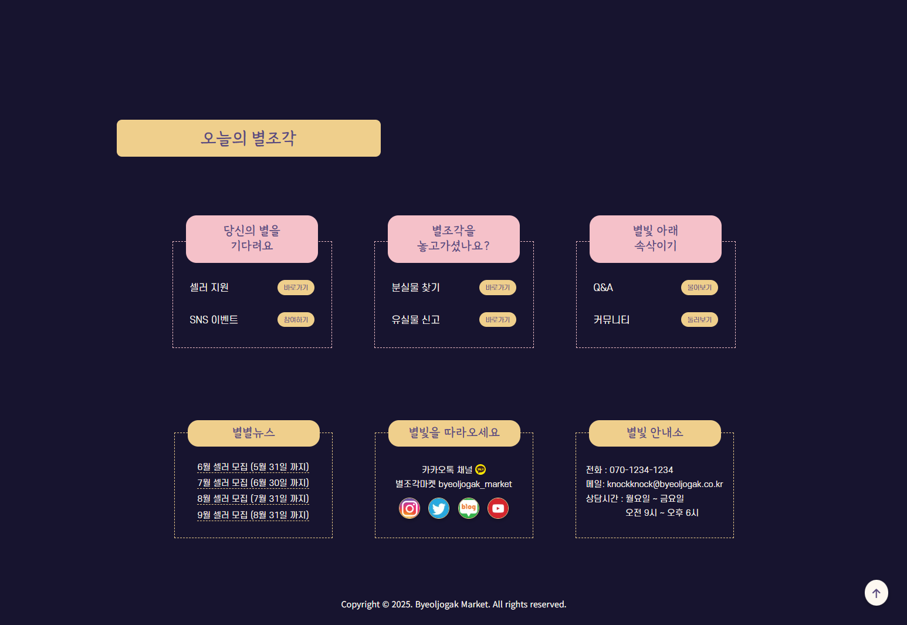
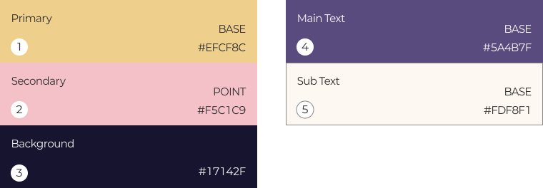
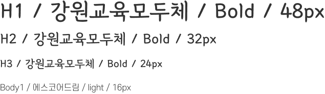

- 제작기간 : 5월 7일 (1일)
- 제작 기여도 : 100% (개인 프로젝트)
- 사용된 스킬 : Figma, HTML, CSS, SCSS
OVERVIEW
프로젝트 설명
HTML 기반의 플리마켓 콘셉트로 구성된 블로그형 기업 홈페이지 퍼블리싱
프로젝트 목표
플리마켓 브랜드의 분위기와 정체성을 시각적으로 효과적으로 전달
정적인 웹사이트 구성 안에서도 풍부한 정보 전달을 고려한 섹션 설계
UI 설계
Figma를 이용한 디자인 시스템 구축 후 코드를 구현,
Flex 기반의 카드형 레이아웃으로 구성
차별화
일러스트 이미지, 폰트, 파스텔톤 컬러 활용 등으로 감성적이고 따뜻한
비주얼을 구성
사용자가 직관적으로 정보에 접근하도록 시맨틱 태그 기반으로 구조를
설계
구현한 기능
카드형 레이아웃을 활용해 서비스 소개가 사용자에게 직관적으로
전달되도록 구성
스크롤 탑 버튼 구현으로 기본적인 인터랙션 요소를 포함
DESIGN SYSTEM
Color Scheme

Typography

RETRACE
문제점
감성적인 톤앤매너를 유지하면서도 레이아웃 정렬을 맞추는 데
어려움을 겪었습니다.
더불어 배경 이미지와 텍스트의 대비 조정을 반복하며 테스트 해 많은
시간이 소요됐습니다.
해결방법
명확하게 컬러 팔레트를 지정하고 나서 텍스트와 배경의 대비를
조절했습니다.
SCSS를 적극적으로 활용해 레이아웃과 컴포넌트의 스타일을 일관되도록
유지했습니다.
개선방안
추후에는 반응형으로 설계해 모든 디바이스에도 적용되도록 구상할
필요성을 느꼈습니다.
콘텐츠의 정렬 기준을 더욱 명확히 하고, 레이아웃 구조를 유연하게
설계해 개선하겠습니다.